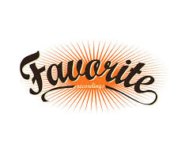

Turysto,
Gdańsk to duże miasto z bogatą historią. Nie trać czasu i zwiedź najbardziej znane zabytki tego pięknego miasta.
Dzięki tej aplikacji to bardzo proste! Wybierz zabytek i dojdź do niego dzięki mapie google.

Mapa z odległościami
Funkcjonalność wyświetlająca mapkę
pokazującą odległość z zadanego punktu
do
wybranego przez osobę oglądającą zabytku.
Polecane
Funkcjonalność polegająca na mozliwości opiniowania
i polecania konkretnych zabytków.
Popularne
Funkcjonalność pokazująca, które z zabytków cieszą się
największą popularnością.

Ulubione
Funkcjonalność polegająca na możliwości dodawania
zabytków,które zaciekawiły oglądającego.